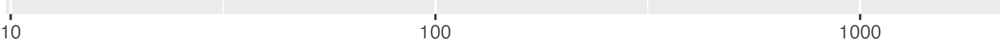
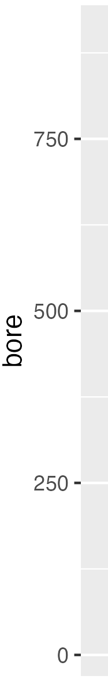
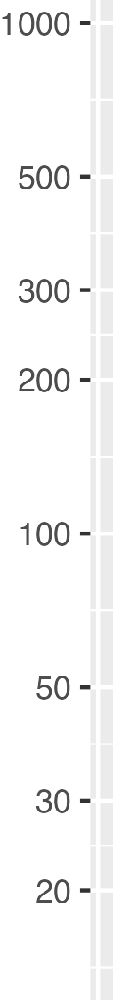
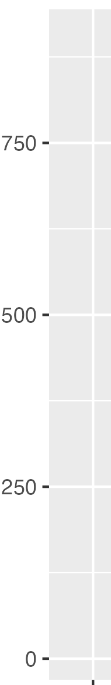

Quantitative Argumentation
Chapter 5 Drill Questions
No answers yet collected
NoteScientific notation and logarithms
Exercise 1 For each of the following, you are asked to compare two standard notation numbers to determine which is larger. You can probably do this at a glance, but we ask you to identify which digit is decisive in making the comparison.
A. Compare 0.0132 and 0.0089
loc-38a
B. Compare 23.1 and 79.3
loc-38b
###C. Compare 102.1 and 97.3
loc-38c
Exercise 2 In each of the following, you are asked to compare two numbers written in scientific notation. Identify how you were able to perform the comparison. (Note that in proper notation, there is exactly one digit 1 to 9 before the decimal point.)
A. Compare 3.2e5 and 4.1e4
bhh-ns-a
B. Compare 7.5e3 and 7.1e3
bhh-ns-b
C. Compare 1.2e-5 and 1.3e5
bhh-ns-c
True or false: log10(5e8) is between 8 and 9.
True or false: The logarithm of 5 kg is a quantity with dimension [mass].
True or false: The logarithm of 5 kg is a quantity with dimension [log mass].
NoteMagnitudes
Exercise 3 A population rises from 2,000 to 20,000. How many orders of magnitude larger is the new population?
d05-order-01
Exercise 4 A sound level changes from 10^-6 W/m^2 to 10^-3 W/m^2. By how many orders of magnitude did the power density increase?
d05-order-02
What is the order of magnitude of 56000? D-05-dock
What is the order of magnitude of -900000000.0? D-05-wad
What is the order of magnitude of 17? D-05-bog
What is the order of magnitude of -0.00043498? D-05-ted
What is the order of magnitude of 7.4? D-05-var
What is the order of magnitude of -0.00000064? D-05-gap
NoteMisc
Exercise 5 Usually you read the order of magnitude from the integer following the e. For instance, the order of magnitude of 1.56e13 is simply thirteen. But for the devious purposes of this drill problem, we’ve written some of the numbers in non-standard form.
The standard form for writing a number in scientific notation has, as you know, two components: a mantissa and an exponent. The mantissa is written to have one non-zero digit to the left of the decimal point. The exponent must always be an integer, that is \(\ldots, -2, -1, 0, 1, 2, 3, \ldots\).
- Which one of the following is not in standard form?
ptb-1-o3f
- Which one of the following is not in standard form?
ptb-2-fdw
Suppose you have a number written in non-standard form, e.g. 36.525e1. To change this to standard form, you need to divide the mantissa by 10, that is, move the decimal point one place to the left. To compensate for the division by 10, you need to raise the exponent by 1. This gives 3.6525e2
Similarly, when the leading digit of the mantissa is zero, for instance 0.0052e1 conversion to standard form requires moving the decimal point to the right until the leading digit is non-zero. To compensate for moving the decimal point, you need to subtract the number of places moved from the exponent. So to put 0.0052e1 in standard form we need to move the decimal point three places to the right and, in compensation, subtract 3 from the exponent. This gives 5.2e-2.
- For each of these mantissas, how do you have to move the decimal point to place the mantissa in a standard form for scientific notation? (3L means “three places to the left” while 2R means two places to the right.)
3a. 92425.01
ptb-3a-clse
3b. 0.00314e3
ptb-3b-s3d
3c. 1.00026e-3
ptb-3c-s3d
- Three of the following numbers have the same order of magnitude. Which one doesn’t?
ptb-4-dkwd
Exercise 6

Which kind of scale is this? sca-1-iynwq

Which kind of scale is this? sca-2-btuqn
- Which kind of scale is this? sca-3-ujkzw

Which kind of scale is this? sca-4-xgjzi
- Which kind of scale is this? sca-5-jtbam

Which kind of scale is this? sca-6-rozql
- Which kind of scale is this? sca-7-byroe
Exercise 7 In everyday speech, a “decade” corresponds to 10 years, “two decades” to 20 years, and so on. In magnitude graphics, a decade refers to something different. On a magnitude scale, as on all numerical scales, there is a lowest marked value and a higher marked value. If the higher marked value is 10-times the size of the lowest, that scale covers one decade. If the higher marked value is 100-times the size of the lowest—that is, two orders of magnitude bigger—the scale is said to cover two decades. A span of three orders of magnitude corresponds to three decades, and so on.
- How many decades are spanned by this interval: [0.01 to 10]?
psp-1-3kdw
- How many decades are spanned by the interval [10 to 1000]?
psp-2-ired
- How many decades are spanned by the interval [0.3 to 30]?
psp-3-yseld
Sometimes an interval doesn’t cover a full order of magnitude. For instance, the in scale [10 to 30], the higher value is not even 10 times the lower. But, when the higher number is 3 times the lower, we way that the interval covers “half a decade.” Why “half?” Two half orders of magnitude places the higher value at \(3 \times 3 \approx 10\) times the lower value. Since since a factor of 10 is one decade, a factor of 3 is (roughly) half a decade.
- How many decades are spaned by the interval [10-300]?
psp-5-2ess
- How many decades are covered by this scale?

psp-5-nkvd
- How many decades are covered by this scale?

psp-6-gru
d05-graphics-02
A magnitude axis changes the underlying values of the quantities begin plotted.